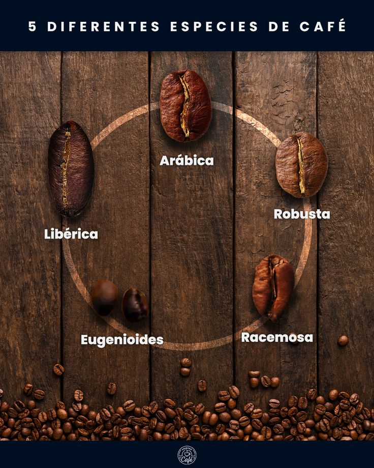
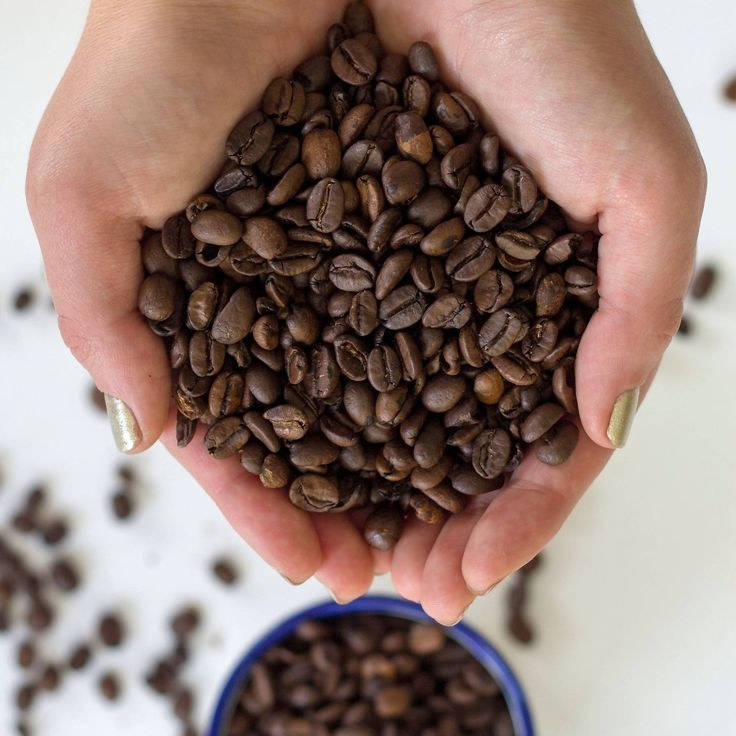

subir
El café es una bebida que se obtiene mediante el percolado de agua caliente a través de los granos tostados y molidos de los frutos de la planta del café (cafeto); es altamente estimulante por su contenido de cafeína, una sustancia psicoactiva. Es uno de los productos más comercializados a nivel mundial, además de estar entre las tres bebidas más consumidas por el ser humano (junto con el agua y el té).
El árbol del café procede del norte de Etiopía (antes llamada Abisinia), en el oriente de África. El cafeto es probablemente originario de la provincia de Kaffa, en Etiopía, pero la cuestión no está resuelta completamente. Crece en los bosques altos del suroeste de Etiopía, de 1300 a 2000 metros de altitud. El cafeto es un arbusto de 10 a 12 metros que crece espontáneamente.
Una leyenda muy difundida sobre el origen del café es la de un pastor de Abisinia, llamado Kaldi, que observó el efecto tonificante que unos pequeños frutos rojos de unos arbustos habían tenido sobre las cabras que los habían consumido, efecto comprobado por él mismo al renovarse sus energías. Kaldi llevó unas muestras de hojas y de frutos a un monasterio, donde los monjes probaron el brebaje preparado a base de los frutos, para evitar quedarse dormidos en los oficios nocturnos.
Otra teoría atribuye a los ancestros de los oromo ser los primeros en reconocer el efecto energizante del café: habrían mezclado con grasa sus granos molidos y formado bolitas para usarlas como raciones en expediciones guerreras.
Aunque la distribución de los cafetos en África sugiere que la planta crecía en forma silvestre o en cultivos a lo largo del continente desde la Antigüedad, no hay pruebas directas que permitan ubicar estos primeros cultivos ni saber qué tribus lo usaban como estimulante. Los datos arqueológicos disponibles hoy en día no permiten afirmar si el uso o conocimiento del café es anterior al siglo XV: el proceso de elaboración de la bebida, largo y complejo, explica quizás el descubrimiento tardío de las virtudes de las semillas del cafeto, poco atractivas inicialmente.
De las más de cien especies que pertenecen al género Coffea, se usan principalmente solo dos para la preparación de la bebida: Coffea arabica y Coffea canephora. La primera especie abarca casi tres cuartas partes de la producción mundial y se cultiva principalmente desde México hasta el trópico de Argentina.
Coffea arabica (también llamado cafeto arábica o arábico o simplemente café arábigo) es la más cultivada desde la Antigüedad. Representa el 75 % de la producción mundial de café. Produce un café fino y aromático, y necesita un clima fresco. El cultivo del cafeto arábica es más delicado, menos productivo y está reservado a tierras altas de montaña, entre 600 y 2000 m s. n. m (metros sobre el nivel del mar). Los diez países con mayor producción de café arábigo, según las estadísticas del 2018/2019, son: Brasil, Colombia, Etiopía, Honduras, Perú, Guatemala, México, Nicaragua, China e India. Además, también son productores Bolivia, Camerún, Costa Rica, Cuba, República Dominicana, El Salvador, Ecuador, la isla de Java, Jamaica, Kenia, Panamá, Puerto Rico, Tanzania, Venezuela y Argentina.
Coffea canephora (también llamado cafeto robusta) ofrece una bebida rica en cafeína; fuerte y más amargo, usualmente usado para la fabricación de café soluble o instantáneo y mezclas. El robusta se adapta a terrenos llanos, con rendimientos más elevados. Es originario del Congo Belga (desde el 30 de junio de 1960, República Democrática del Congo). Hoy en día los diez países con mayor producción de café robusta son: Vietnam, Brasil, Indonesia, Uganda, India, Malasia, Costa de Marfil, Tailandia, Tanzania y Laos11 (datos de 2018/2019). Es más resistente que el arábigo, de ahí su nombre «robusta»
Arábica: Es la variedad más popular y tiene un sabor aromático y suave.
Robusta: Contiene más cafeína que el arábica y tiene un sabor más intenso y terroso. Es comúnmente cultivado en África, Vietnam e Indonesia.
iberica: Tiene un sabor ahumado y especiado.
Excelsa: Tiene un sabor ácido y afrutado.Actualmente, la planta se cultiva principalmente en países tropicales y subtropicales como Brasil, Vietnam y Colombia (principales productores de café). Brasil concentra poco más de un tercio de la producción mundial. Los granos del café son uno de los principales productos de origen agrícola que se comercializan en los mercados internacionales y a menudo suponen una gran contribución a los rubros de exportación de las regiones productoras.